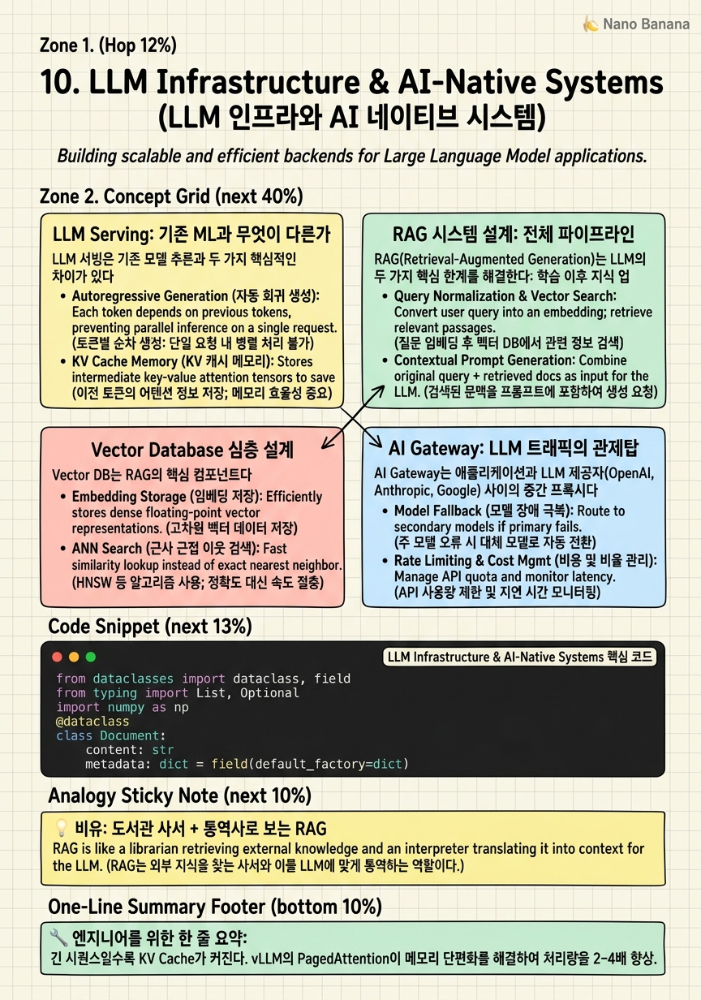

LLM Infrastructure & AI-Native Systems

🎯 학습 목표
- LLM 서빙의 핵심 병목(KV Cache, Batch Size, Latency/Throughput Trade-off)을 설명할 수 있다
- RAG 시스템의 전체 파이프라인(인덱싱 → 검색 → 생성)을 설계할 수 있다
- Vector DB의 청킹 전략, 임베딩 모델 선택, 검색 최적화를 설명할 수 있다
- AI Gateway가 제공하는 기능(Rate Limiting, Caching, Routing, Observability)을 설명할 수 있다
- LLM 기반 시스템의 평가 방법(LLM-as-a-Judge, Human Evaluation, Benchmark)을 설명할 수 있다
2023년 ChatGPT의 등장으로 LLM을 프로덕션에 서빙하는 것이 AI Engineering의 핵심 과제가 됐다. LLM 서빙은 기존 ML 모델 서빙과 근본적으로 다르다 — 모델 크기가 수백 GB이고, 생성적(generative) 특성 때문에 latency 패턴이 완전히 다르며, KV Cache 관리가 핵심 병목이다.
이 챕터에서는 LLM을 단순히 API로 쓰는 것을 넘어, 어떻게 수십만 사용자에게 동시에 안정적으로 서빙하는가, RAG로 지식 기반을 구축하는가, 여러 모델을 전략적으로 조합하는가를 다룬다.
빅테크 AI Engineering 면접에서는 이 주제들이 점점 더 많이 출제되고 있다. "ChatGPT 같은 서비스를 설계해봐", "기업 내부 문서 검색 AI를 설계해봐", "여러 LLM을 라우팅하는 시스템을 설계해봐"가 대표적인 문제들이다.
핵심 내용
LLM Serving: 기존 ML과 무엇이 다른가
LLM 서빙은 기존 모델 추론과 두 가지 핵심적인 차이가 있다.
1. Auto-Regressive 생성 = 순차적 토큰 생성
LLM은 한 번에 전체 출력을 만들지 않는다. 토큰을 하나씩 순차적으로 생성한다. 토큰 500개 = 500번의 forward pass. 각 pass마다 이전 모든 토큰의 Key-Value 벡터(KV Cache)가 필요하다.
2. KV Cache 메모리 병목
KV Cache는 각 Attention layer에서 계산된 Key와 Value 행렬이다. 시퀀스 길이가 길어질수록 KV Cache 크기가 선형으로 증가한다. 7B 파라미터 모델, 배치 크기 1, 시퀀스 길이 2048: KV Cache ≈ 수 GB. 긴 컨텍스트(32K, 128K tokens)에서는 KV Cache가 모델 파라미터보다 클 수도 있다.
vLLM과 PagedAttention:
vLLM은 UC Berkeley에서 2023년 발표한 LLM 서빙 프레임워크. 핵심 혁신은 PagedAttention — OS의 Virtual Memory 방식을 KV Cache 관리에 적용. 메모리를 고정 크기 "Page"로 분할, 필요할 때만 할당, 완료된 요청의 Page 즉시 해제. 기존 방식 대비 처리량 최대 24배 향상.
Latency vs Throughput Trade-off:
-
Time to First Token (TTFT) — 첫 토큰이 나오기까지 시간. 사용자 체감 응답 속도.
-
Time Per Output Token (TPOT) — 이후 토큰 생성 간격. 스트리밍 속도.
-
Throughput (Tokens/sec) — 초당 처리 토큰 수. 시스템 전체 용량.
배치 크기가 클수록 GPU 활용률이 높아져 Throughput 증가, 하지만 개별 요청 TTFT 증가. 실시간 챗봇은 TTFT 최소화, 배치 처리 API는 Throughput 최대화.
RAG 시스템 설계: 전체 파이프라인
RAG(Retrieval-Augmented Generation)는 LLM의 두 가지 핵심 한계를 해결한다: 학습 이후 지식 업데이트 불가, 기업 내부 비공개 데이터 활용 불가.
RAG 파이프라인은 2단계:
오프라인 인덱싱 파이프라인:
- 문서 수집 (PDF, HTML, DB, API)
- 텍스트 추출 및 전처리
- 청킹 (Chunking) — 문서를 검색 단위로 분할
- 임베딩 생성 — 각 청크를 임베딩 모델로 벡터화
- Vector DB에 저장 (임베딩 + 원문 + 메타데이터)
온라인 검색-생성 파이프라인:
- 사용자 쿼리 수신
- 쿼리 임베딩 생성
- Vector DB에서 ANN 검색 → Top-K 관련 청크 검색
- 선택적으로 BM25 키워드 검색과 결합 (Hybrid Search)
- Re-ranking 모델로 검색 결과 재정렬
- 검색된 청크 + 원본 쿼리 → LLM Prompt 구성
- LLM 응답 생성
청킹 전략:
| 전략 | 방법 | 적합한 경우 |
|---|---|---|
| Fixed-Size | 512 tokens마다 분할 | 단순, 일반 텍스트 |
| Sentence-Based | 문장 단위 분할 | 문맥 보존 중요 시 |
| Paragraph-Based | 단락 단위 분할 | 긴 문서 |
| Semantic | 의미 단위로 분할 | 최고 품질, 비용 높음 |
| Hierarchical | 작은 청크(검색) + 큰 청크(컨텍스트) | Parent-Child Retrieval |
Vector Database 심층 설계
Vector DB는 RAG의 핵심 컴포넌트다. 설계 시 고려해야 할 사항들:
임베딩 모델 선택:
| 모델 | 차원 | 특징 |
|---|---|---|
| text-embedding-3-small | 1536 | OpenAI, 다목적, 비용 효율 |
| text-embedding-3-large | 3072 | OpenAI, 최고 품질 |
| bge-m3 | 1024 | 다국어, 한국어 우수, 오픈소스 |
| E5-mistral-7b | 4096 | 고품질, 무거움 |
임베딩 모델은 나중에 바꾸기 어렵다. 모든 문서를 재임베딩해야 하므로 처음부터 신중히 선택.
메타데이터 필터링:
Vector 검색 + 메타데이터 필터를 결합. "법무팀 문서 중 2024년 이후 작성된 것"처럼 도메인 필터 후 유사도 검색. Pinecone, Weaviate, Qdrant 모두 지원.
Hybrid Search (벡터 + BM25):
순수 벡터 검색은 키워드 검색에 약하다. 예: "GDPR Article 17" 같은 정확한 법률 조항 검색.
Hybrid = 벡터 검색 결과 + BM25(키워드) 결과를 RRF(Reciprocal Rank Fusion)로 결합.
Multi-Tenancy:
기업 환경에서는 팀별, 사용자별 데이터를 분리해야 한다.
- Namespace 분리: 같은 Vector DB 내에서 논리적 분리
- 컬렉션 분리: 팀별 별도 컬렉션
- 인스턴스 분리: 민감한 데이터는 별도 인스턴스 (가장 강한 격리)
AI Gateway: LLM 트래픽의 관제탑
AI Gateway는 애플리케이션과 LLM 제공자(OpenAI, Anthropic, Google) 사이의 중간 프록시다. 기존 API Gateway의 LLM 특화 버전으로, LiteLLM, Portkey, Kong AI Gateway가 대표적이다.
AI Gateway의 핵심 기능:
1. Semantic Cache (의미론적 캐시)
"GPT-4 가격이 얼마야?"와 "GPT-4는 얼마야?"는 같은 의도지만 다른 문자열이다. Exact-match 캐시로는 두 번 LLM을 호출한다. Semantic Cache는 두 쿼리의 임베딩 유사도를 계산해서, 유사한 쿼리에 캐시된 응답을 반환한다. LLM API 비용 30~50% 절감 가능.
2. Multi-Model Routing
모든 쿼리를 GPT-4로 보내면 비용이 크다. 쿼리 복잡도에 따라 모델을 선택: - 단순 쿼리 → GPT-4o-mini (빠르고 저렴) - 복잡한 추론 → Claude Opus 또는 GPT-4o - 코드 생성 → Deepseek-Coder 또는 Claude-Code
3. Rate Limiting과 비용 관리
사용자별/팀별 토큰 사용량 추적 및 한도 설정. 월 예산 초과 방지.
4. Fallback과 Retry
OpenAI API가 5xx 에러를 반환하면 자동으로 Anthropic Claude로 fallback. Circuit Breaker 패턴.
5. Observability
모든 LLM 호출의 입력/출력, latency, 비용, 토큰 수, 모델 버전을 로깅. 디버깅과 비용 분석에 필수.
LLM 평가 시스템: LLM-as-a-Judge
LLM 기반 시스템은 기존 ML과 달리 단일 숫자 지표로 품질을 측정하기 어렵다. 언어 생성의 품질은 주관적이고 다차원적이다.
평가 방식의 계층:
1. Rule-based (자동화, 가장 빠름)
형식 검사 (JSON 파싱 가능한가?), 키워드 포함 여부, 길이 제한 준수, 금지 단어 없음. 빠르고 결정론적. 하지만 품질의 일부만 측정.
2. Reference-based (Ground Truth 비교)
정답이 있는 태스크에서 LLM 응답과 비교. QA 시스템: 정답 포함 여부. 코드 생성: 테스트 케이스 통과 여부. F1, ROUGE, BLEU 같은 지표.
3. LLM-as-a-Judge (LLM으로 LLM 평가)
더 강력한 LLM(Judge)이 다른 LLM의 응답 품질을 평가. GPT-4가 다른 모델의 응답을 1~5점으로 채점.
Prompt: "다음 답변의 정확성, 유용성, 간결함을 각각 1-5점으로 평가하고 이유를 설명해라."
장점: 주관적 품질도 측정 가능. 다양한 차원(정확성, 안전성, 형식) 동시 평가. 단점: LLM 자체의 편향(Verbosity Bias — 긴 답변 선호). 비용. 비결정론적.
4. Human Evaluation (A/B Test)
실제 사용자가 두 모델의 응답을 비교하여 선택. 가장 신뢰도 높지만 비용과 시간이 많이 든다. Anthropic의 Constitutional AI 연구에서 이 방식을 활용했다.
평가 파이프라인:
모델 변경 PR → 자동 Rule-based + LLM-as-a-Judge → 기준 통과 → Shadow Mode 배포 → Human Evaluation Sample → 전체 배포
💡 비유로 이해하기
LLM만 있는 시스템은 모든 것을 외우려는 사람과 같다. 아무리 똑똑해도 작년에 배운 것을 넘어설 수 없고, 회사 내부 문서는 전혀 모른다.
RAG 시스템은 책을 찾는 것과 읽는 것을 분리한다. 질문이 들어오면 먼저 도서관(Vector DB)에서 가장 관련 있는 문서를 찾아온다. 그 문서를 읽고 이해한 후에 답변한다. 도서관(RAG)은 지식을 실시간으로 업데이트할 수 있다. 통역사(LLM)는 주어진 문서를 이해하고 질문에 답하는 능력이 있다.
AI Gateway는 도서관 앞 안내 데스크다. "법률 문서 질문이에요" → 법률 전문 사서에게, "코드 질문이에요" → 기술 전문 사서에게 라우팅한다. 자주 묻는 질문(Semantic Cache)은 바로 답한다. 한 사서가 너무 바쁘면(Rate Limit) 다른 사서에게 연결한다.
💻 코드 예시
RAG 시스템의 핵심인 문서 청킹, 임베딩, 벡터 검색을 구현하는 간단하지만 실용적인 RAG 파이프라인이다.
from dataclasses import dataclass, field
from typing import List, Optional
import numpy as np
@dataclass
class Document:
content: str
metadata: dict = field(default_factory=dict)
embedding: Optional[np.ndarray] = None
class SimpleRAGPipeline:
"""Production-like RAG with chunking, embedding, and retrieval."""
def __init__(self, chunk_size: int = 512, chunk_overlap: int = 50):
self.chunk_size = chunk_size
self.chunk_overlap = chunk_overlap
self.documents: List[Document] = []
self.embeddings: Optional[np.ndarray] = None
def chunk_text(self, text: str, metadata: dict) -> List[Document]:
"""Split text into overlapping chunks for better context preservation."""
chunks = []
words = text.split()
step = self.chunk_size - self.chunk_overlap
for i in range(0, len(words), step):
chunk_words = words[i:i + self.chunk_size]
if len(chunk_words) < 50: # Skip tiny trailing chunks
continue
chunks.append(Document(
content=' '.join(chunk_words),
metadata={**metadata, 'chunk_index': len(chunks)}
))
return chunks
def embed(self, texts: List[str]) -> np.ndarray:
"""Stub: replace with real embedding model (OpenAI, bge-m3, etc.)"""
# In production: openai.embeddings.create(input=texts, model='text-embedding-3-small')
np.random.seed(hash(texts[0]) % 2**31) # Deterministic for demo
return np.random.randn(len(texts), 128).astype(np.float32)
def index(self, raw_docs: List[dict]):
"""Offline indexing pipeline."""
all_chunks = []
for doc in raw_docs:
chunks = self.chunk_text(doc['content'], doc.get('metadata', {}))
all_chunks.extend(chunks)
# Batch embed all chunks
texts = [chunk.content for chunk in all_chunks]
embeddings = self.embed(texts)
for i, chunk in enumerate(all_chunks):
chunk.embedding = embeddings[i]
self.documents = all_chunks
# Normalize for cosine similarity
norms = np.linalg.norm(embeddings, axis=1, keepdims=True)
self.embeddings = embeddings / (norms + 1e-8)
print(f"Indexed {len(self.documents)} chunks")
def retrieve(self, query: str, top_k: int = 5) -> List[Document]:
"""Online retrieval — called on every user query."""
query_emb = self.embed([query])
query_emb /= (np.linalg.norm(query_emb) + 1e-8)
scores = (self.embeddings @ query_emb.T).squeeze() # Cosine similarity
top_indices = np.argsort(scores)[::-1][:top_k]
return [self.documents[i] for i in top_indices]
def answer(self, query: str) -> str:
"""Full RAG pipeline: retrieve + generate."""
retrieved = self.retrieve(query, top_k=5)
context = "\n\n".join(f"[{i+1}] {doc.content}" for i, doc in enumerate(retrieved))
# In production: send to LLM with context
return f"[Prompt to LLM]\nContext:\n{context}\n\nQuestion: {query}\n\nAnswer:"
# Demo
rag = SimpleRAGPipeline(chunk_size=100, chunk_overlap=20)
rag.index([
{"content": "Kubernetes is an open-source container orchestration system. " * 10,
"metadata": {"source": "k8s_docs"}},
{"content": "Docker containers package applications and dependencies together. " * 10,
"metadata": {"source": "docker_docs"}},
])
result = rag.answer("What is container orchestration?")
print(result[:300])청킹에서 chunk_overlap이 중요하다. 오버랩 없이 분할하면 문장이 청크 경계에서 잘려 컨텍스트를 잃는다. 50 토큰 오버랩으로 연속성을 유지한다. 임베딩을 L2 정규화 후 내적으로 코사인 유사도를 계산한다 (내적 = cos similarity when normalized). 프로덕션에서는 embed() 함수를 OpenAI/Cohere/bge-m3 실제 API로 교체하고, index()는 오프라인 배치로, retrieve()는 온라인 FAISS로 교체한다.
🏭 현업에서의 평가
✅ 시니어가 보는 것
- LLM 서빙의 KV Cache 병목과 vLLM의 해결책을 설명할 수 있는가
- RAG 파이프라인의 각 단계와 품질에 영향을 주는 요소를 아는가
- AI Gateway를 통한 비용 최적화 전략을 제시할 수 있는가
- LLM 시스템의 평가가 기존 ML보다 어려운 이유와 해결책을 설명하는가
⚠️ 레드 플래그
- RAG = "그냥 벡터 DB에 문서 넣고 검색"이라고만 설명하는 경우
- 청킹 전략이나 임베딩 모델 선택의 중요성을 모르는 경우
- LLM 서빙을 기존 API 서버 배포와 동일하게 보는 경우
- 평가 시스템 없이 "프롬프트를 잘 쓰면 됩니다"라고만 말하는 경우
🎤 예상 인터뷰 질문
- 기업 내부 문서 Q&A 시스템을 설계해봐. 수백만 문서, 수천 동시 사용자.
- RAG 시스템의 품질이 낮다. 어떻게 개선하겠어?
- LLM 서빙 비용을 절반으로 줄여야 한다. 어떻게 접근하겠어?
✨ 핵심 요약
KV Cache가 LLM 서빙의 핵심 병목
긴 시퀀스일수록 KV Cache가 커진다. vLLM의 PagedAttention이 메모리 단편화를 해결하여 처리량을 24배 향상.
TTFT vs Throughput
챗봇은 TTFT 최소화(첫 토큰까지 속도), 배치 API는 Throughput 최대화. 배치 크기로 균형을 맞춘다.
RAG = 검색 + 생성의 분리
LLM의 지식 한계를 Vector DB 검색으로 보완. 기업 내부 문서를 LLM이 활용하게 하는 표준 방법.
청킹이 RAG 품질 결정
청크가 너무 작으면 컨텍스트 부족, 너무 크면 노이즈 증가. Semantic chunking이 최고 품질이지만 비용이 높다.
Hybrid Search (벡터 + BM25)
정확한 키워드(법률 조항, 제품 코드)는 BM25, 의미 유사성은 벡터 검색. 두 가지를 RRF로 결합하면 더 좋다.
AI Gateway = LLM 관제탑
Semantic Cache로 비용 절감, Smart Routing으로 비용/품질 균형, Rate Limiting, Observability. 모든 LLM 트래픽이 거쳐야 한다.
LLM-as-a-Judge로 자동 평가
더 강한 모델이 약한 모델을 평가. 주관적 품질 측정 가능. 단 Verbosity Bias 등 편향을 인지하라.
Semantic Cache = LLM 비용 30~50% 절감
같은 의미의 다른 표현을 임베딩 유사도로 감지하여 캐시 재사용. 고정 비용 질문이 많은 서비스에서 효과적.